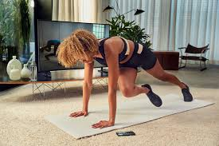
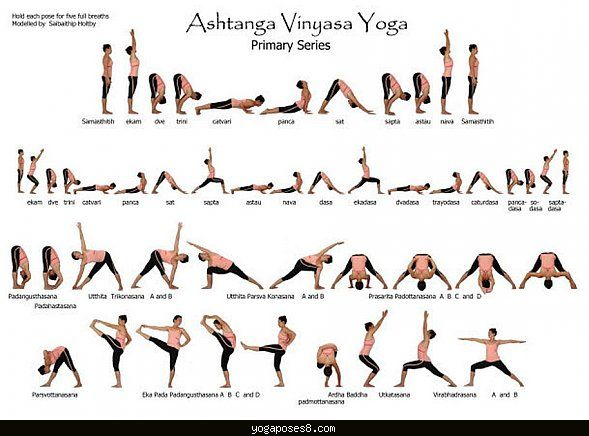

Fitness
Introduction
 This is the part I have always struggled with. I start working out and then will be great for a while and then something happens and I get an excuse to sit back and veg! My husband definitley helps in keeping me motivated. it definitely helps to have a buddy who you answer to. Since the Covid stay in place started, I stopped going to my gym and I had to find ways to keep myself moving and get some cardio and streches. A few friends and I got together and started working out over zoom. This kept me motivated since we had a fixed time we would meet and work out. I have been doing Yoga for a while now, and I love it. This includes Pranayams, breathwork. So I used to lead the yoga class while my husband led the weights and cardio. We did this on alternate days. I thought, well, this is great! Then came my blood work from my yearly check up. My cholestrol numbers and LDL were not looking great. This was inspite of a vegetarian diet and workouts everyday! I realized after the hour of workout, I was just in my chair for the rest of the day for my work. This was a wake up call for me. I added morning and after dinner walks to my schedule. I feel great. Now I actually miss my walks and workouts if we happen to skip them.
Fitness Goals
My goal is to actually gain some muscle and keep my flexibility with the help of yoga while keeping those cholestrol numbers down. My goal is to be pain free and
Links to some of my favorite websites
Yoga
Here are some of my favorite yoga poses. Vinyasa basically means yoga that flows from one pose or asana into the next. This is the kind I love.

| Day | Workout Type | Time |
|---|---|---|
| Monday | Yoga | 60 mins |
| Tuesday | Cardio | 40 mins |
| Wednesday | Vinyasa Yoga | 60 mins |
| Thursday | Weight Training | 50 mins |
| Friday | Yoga | 50 mins |
| Saturday | Cardio and weights | 50 mins |
| Sunday | Walk | 50 mins |